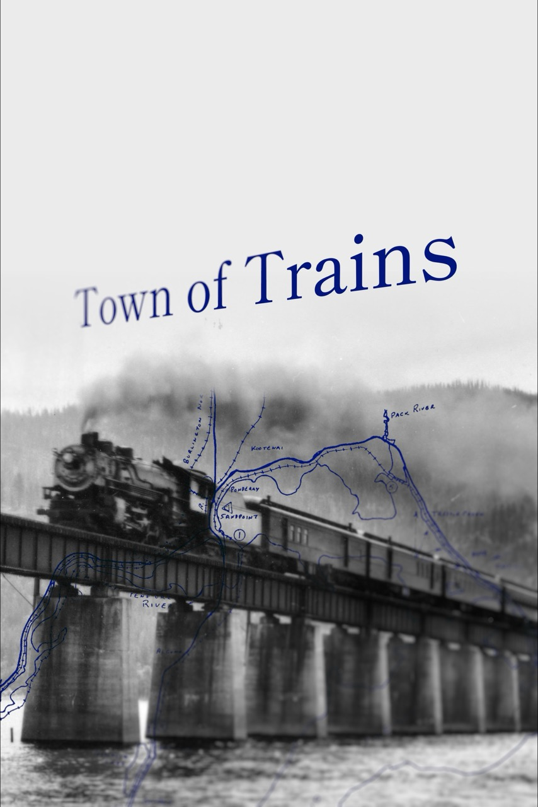

The Duke of Diving Beetles
A professor travels to Brazil on an obsessive quest to find an extinct beetle.
editing, documentary, and digitization services
"SOMEHOW HEARTBREAK FEELS GOOD IN A PLACE LIKE THIS."
A professor travels to Brazil on an obsessive quest to find an extinct beetle.
Every day, 50 trains make their way through the town of Sandpoint, Idaho. Experience selected stories behind the Northwest’s largest railroad funnel. This short documentary blends archival interviews with modern footage. Hop aboard, it’s choo-choo time!
Premiered at the inaugural Sandpoint Idaho Film Fest in October, 2026.

Curated videos from my time as a graduate student in the University of Florida Forest Entomology Lab:
In college, I collaborated with Miles Maxcer on dozens of antkeeping videos. This one is my favorite: